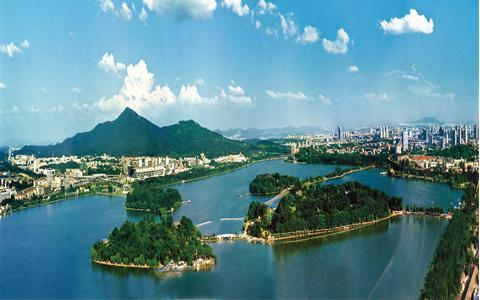

|  | 玄武湖古名桑泊、后湖，已有一千五百多年的历史。六朝时期为皇家园林，明朝时为黄册库，系皇家禁地，清朝时期辟为公园。 玄武湖位于南京市城中，是紫金山脚下的国家级风景区，中国最大的皇家园林湖泊，当代仅存的江南皇家园林，江南三大名湖之一，是江南最大的城内公园，被誉为"金陵明珠"。巍峨的明城墙，秀美的九华山，古色古香的鸡鸣寺环抱在右。 玄武湖方圆近五里，分作五洲(环洲、樱洲、菱洲、梁洲、翠洲)，洲洲堤桥相通，浑然一体，处处有山有水，山异，终年景色如画。湖内养鱼，并种植荷花，夏秋两季，水面一片碧绿，粉红色荷花掩映其中，满湖清香，景色迷人。 环湖有玄武晨曦、北湖艺坊、玄圃、玄武烟柳、武庙古闸、明城探幽、古阅武台等众多景点。玄武湖为风景园林，亦为文化胜地，许多文人骚客都曾在此留下身影诗篇，如萧统、李煜、韦庄、杜牧、刘禹锡、李商隐、李白、欧阳修、王安石、曹雪芹、郭沫若等。"钱塘莫美于西湖;金陵莫美于后湖。"北宋文学家欧阳修曾如此赞誉玄武湖。 |